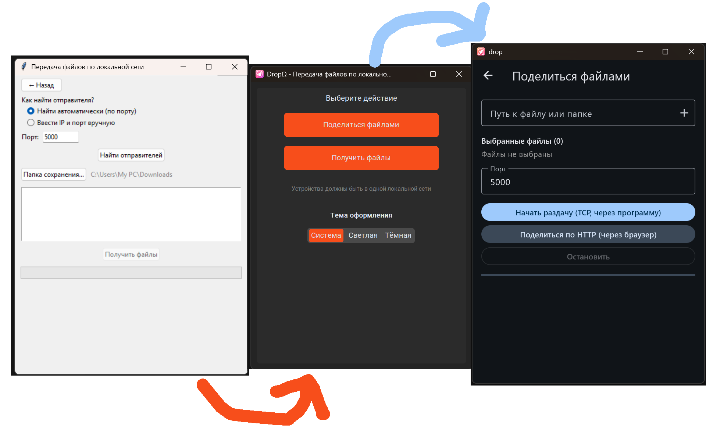

DropΩ — это приложение
для обмена файлами
по локальной сети
DropΩ — это легковесное и быстрое приложение
для удобного обмена файлами
в локальной сети между устройствами.
Программа позволяет легко раздавать файлы как
через встроенный сетевой протокол,
так и делиться ими через обычный браузер.

drop прошёл через много этапов смены библиотек, языков програмирований и голобальной смены дизайна
Скачать Drop
| Версия | Особенности | Скачать |
|---|---|---|
| build 4 |
|
|
| build 4 |
|
|
| build 4 |
|